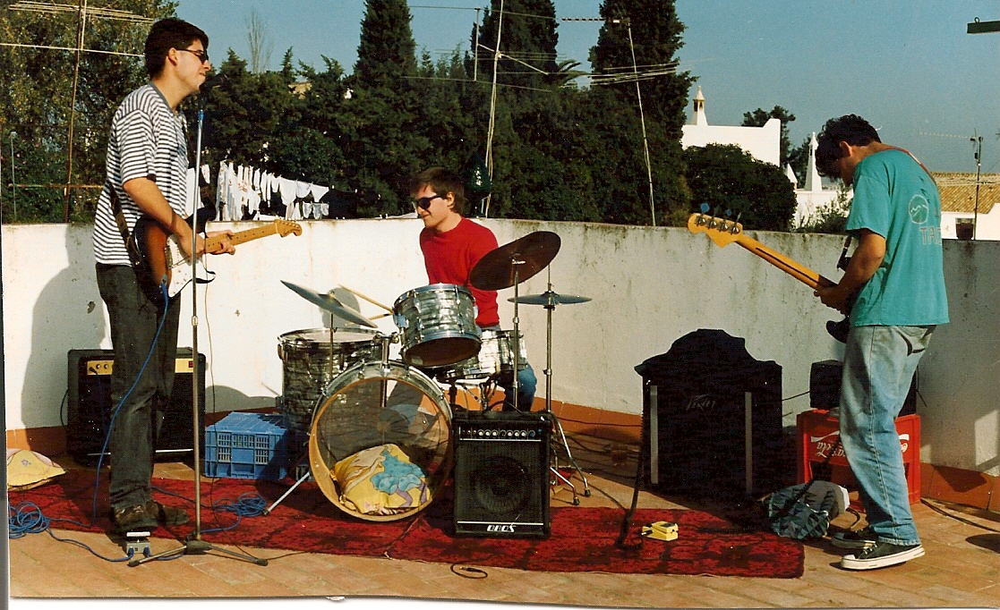
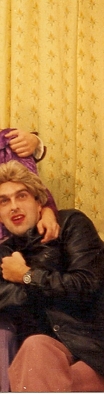
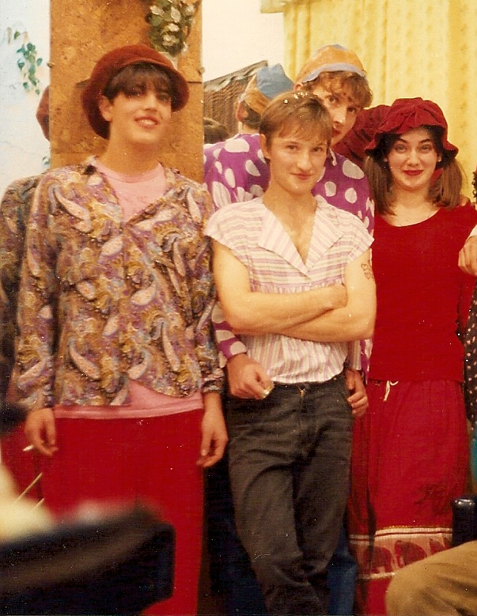

Mes débuts dans le monde de la musique a commencé en 1990, quand quelques amis se sont réunis pour former un groupe qui plus tard s'appelle Sr. Chinarro.
Je faisais partie du groupe en tant que bassiste jusqu'à la fin de 1994. Puis j'ai fait un nouveau groupe appelé Lupa avec Juan Fco. Morato. Après une démo enregistrée avec moyens terribles, spectacles en direct inoubliables et finalistes étant dans le 'Villa de Bilbao', le groupe dissous.
Plus tard, entre 1997 et 2000, je suis retournée travailler avec Sr. Chinarro, cette fois en tant que claviériste au Festival Internacional de Benicàssim (deux fois), Santander, Granada et d'autres.
Sr. Chinarro - Primera maqueta (1991)
Sr. Chinarro - Segunda maqueta (1991)
Sr. Chinarro - El Colectivo Karma (El Colectivo Karma, 1992)
Sr. Chinarro - Pequeño Circo EP (Acuarela Records, 1993)
Pequeñas Cosas Furiosas - Cubierta de melaza (1995)
Lupa - Primera maqueta (1996)






Depuis 1992 j'ai travaillé avec le réalisateur Juan Jose Moreno et j'ai été impliqué d'une manière ou d'une autre dans ses premiers films. Dans ces années-là nous avons enregistré La mano en el congelador (1992) et Materia gris (1993).
En 1995, j'ai fait la bande originale du court-métrage Entiendes...? et quelques années plus tard la bande originale du film Las primeras veces (Juan J. Moreno, 2001).

Depuis le début du nouveau siècle, mon intérêt pour la musique électronique était in-crescendo. En 2005 je commence le DJing et à partir de 2008 à produire mes premiers morceaux. Actuellement je le combine avec la création de bandes originales libre droits pour vidéos, films, sites web, jeux vidéo, etc.
Exemple de travail realisé.